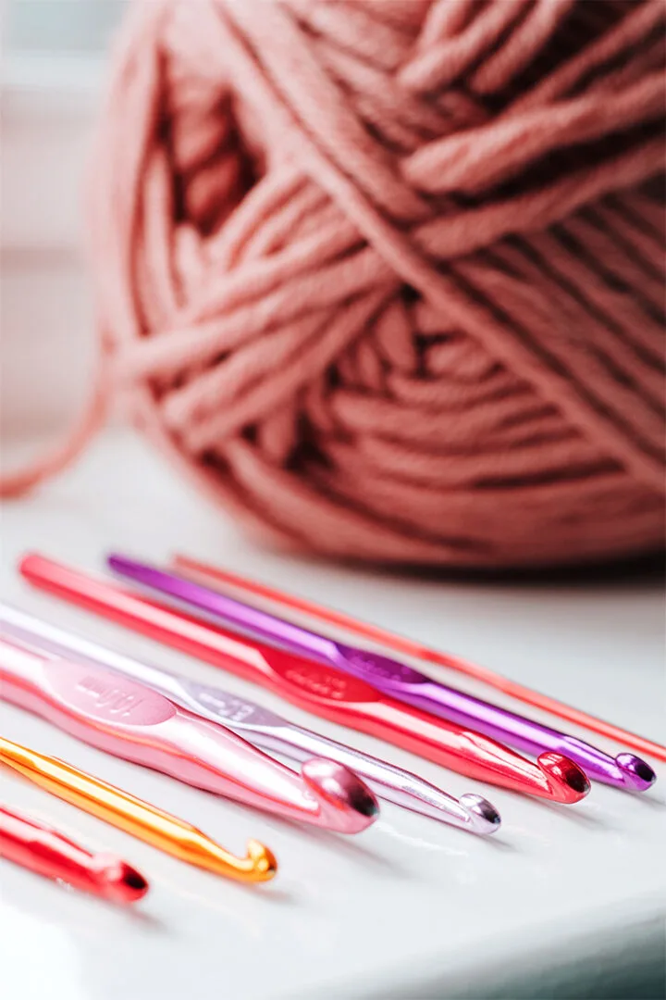

---Basic Information---
What is Crochet?
Crochet is a kind of needlecraft where a hook is used to construct fabric from loops of yarn. You can make clothes, bags, stuffed animals, and anything in between using this techniques. Crocheting can be just the thing you're seeking for if you want to pass the time in a creative and enjoyable way!
Supplies
You will first need a hook.
- Hooks are used to thread the yarn together. There is different sizes that will influence the size of each individual loop. The average size that most patterns use is either a 4 or 5
Next, you will need yarn.
- There is two main types: Acrylic or Wool. This is fully up to personal prefrences and will likely make little change in the end results of your project. I prefer Acrylic because it is easier to wash, but some prefer wool because the texture is nicer.
- There is also many choices for colors. You can choose any color you like! Most patterns will only use one skien of yarn, but you may need multiple to change the colors